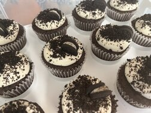

Sweets and Treats
One thing that brings me joy, is making treats to give away. A recent tradition that we have been doing since making ‘fancy’ cakes, is to let the birthday person decide who to share their cake with. We then bring a good portion of the cake to them, hoping to brighten their day. With sharing, comes the need to learn other baking styles, Gluten Free, sugar free, dairy free... we have had some successes (and fails) with all of those, along with many successes with ALL. THE. SUGAR! I also am not a fan of artificial dyes, which makes it tricky to add colors to my desserts. This week, we will be featuring Cupcakes. The OREO cupcake, A Dairy Free/Dye Free Chocolate Cupcake, and a German Chocolate Cupcake.
Introducing the "no-fail" Oreo Cupcake
We have made this recipe too many times to count in the past 5 years, it is a winner with everyone who has tried it so far.
Recipe
Ingredients For The Cake: 1 box of triple chocolate cake mix 1 cup vegetable oil I box unprepared chocolate pudding 1 cup Sour cream 4 eggs ½ cup of water 1 cup semi-sweet chocolate chips 6 Oreos Ingredients For The Oreo Frosting: 1 8-ounce package cream cheese 4 cups powdered sugar 1 tbsp vanilla extract ⅔ container of Cool Whip 1 tbsp E-Z gel More Oreos for topping
How To Make Oreo Cupcakes
Preheat the oven to 350 degrees F.
1. In a large bowl, combine all the Oreo cake ingredients except for the Oreos and chocolate chips (you will add them in a minute). 2. Add the chocolate chips and crumbled up Oreos and mix well. 3. Pour batter into cupcake liners in cupcake tin. 4. Bake cupcakes for 15-18 minutes and then allow them to cool completey while you make the frosting. 5. Make your frosting by combining cream cheese, powdered sugar, and vanilla in a large bowl. Slowly add the E-Z gel, mixing well. Fold in the whipped cream. 6. Place in the fridge to set for a bit.